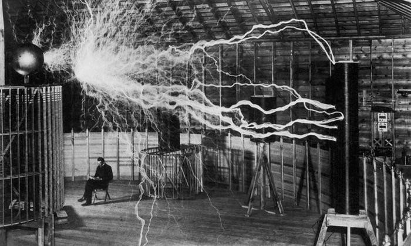

Nikola Tesla
The man with free energy

Nikola Tesla sitting by his tesla coil demonstrating wireless power transfer
Here's a timeline of Nikola Tesla's life:
- 1856 - Tesla was born in Smiljan, Croatia
- 1870s - Studied at the Realschule, Karlstadt (later renamed) in Germany; the Polytechnic Institute in Graz, Austria; and the University of Prague
- 1884 - Arrived in the United States with little more than the clothes on his back and a letter of introduction to Thomas Edison
- 1885 - First solo venture, Tesla received funding for the Tesla Electric Light Company and was tasked by his investors to develop improved arc lighting.
- 1887 - Tesla found funding for his new Tesla Electric Company, again, after forced out of venture first time
- 1888 - American engineer and businessman George Westinghouse, who was seeking a solution to supplying the nation with long-distance power, purchased Tesla's patents for $60,000 in cash and stock in the Westinghouse Corporation.
- 1895 - Designed what was among the first AC hydroelectric power plants in the United States, at Niagara Falls.
- 1901 - Began the free energy project with a power plant and a massive transmission tower on a site on Long Island, New York, that became known as Wardenclyffe.
- 1943 - Tesla died of coronary thrombosis at the age of 86 in New York City
“If you want to find the secrets of the universe, think in terms of energy, frequency and vibration.”
― Nikola Tesla
― Nikola Tesla